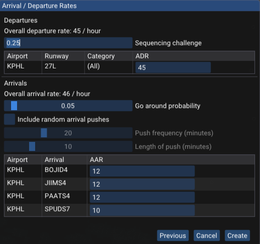
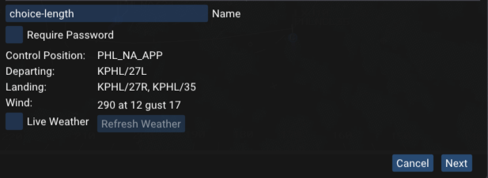
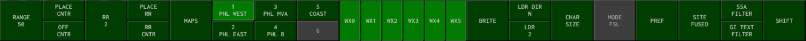

Getting Started
The radar client interface that vice provides is based on STARS.
For familiarity to VATSIM controllers, vice generally follows the keyboard command scheme implemented
in CRC's STARS implementation; see
the discussion of vice's STARS
emulation below for more information.
The first time you launch vice, a window is shown for configuring the simulation.
(After the first time, the window can be brought up by clicking the "replay" button in the menubar: .)
A number of scenarios are available, some departure-only and
some including both departures and arrivals.
Here is an example:
After selecting an ARTCC, the available TRACONs and ATCT/TRACONs in that ARTCC are shown.
Selecting one of those gives a number of scenarios to choose from. Here the ZNY ARTCC has
been selected and then the PHL ATCT/TRACON. After choosing a scenario and clicking the "Next"
button, a window with further settings is shown:

In the second configuration window, you can set the average departure rate (ADR)
for all of the airports that may have departures in the scenario as well as the average arrival rate (AAR) for all of the
arrival airports.
(The PHL scenario only includes the Philadelphia Airport, though other scenarios include both a primary airport as well as satellites.)
Both of these rates are specified in terms of aircraft per hour, so an ADR of 30 corresponds to one aircraft departing
every two minutes (on average).
If you'd like an arrival-only scenario, for example, just set all of the departure rates to zero.
The "Sequencing challenge" slider controls how challenging the departure sequence is—the higher it is, the more likely it is
that successive departures will be to the same gate or to the same fix.
For arrivals, the "Go around probability" slider allows setting the probability that each arrival goes around.
You may also select "Include random arrival pushes", which will periodically bump up the rate of
arrivals to increase the challenge of vectoring the aircraft.
"Push frequency" sets how often arrival pushes happen and "Length of push" sets how long they last
before traffic returns to regular levels.
After you have configured the simulation, click "Ok" and you will have a STARS scope and flight strip window to work with.
Use the usual STARS commands as appropriate (to initiate track, accept handoffs, handoff to other controllers, etc.),
and the additional ATC commands below to issue control commands to aircraft.
When the simulation starts, vice also displays a small
window listing the active departures, arrivals, and approaches.
For this LGA scenario, three arrivals are active but there is
just one approach and one departure.
Other scenarios may be more complex.
The approach codes—here, "27R" and "35"— are used in vice's aircraft control commands like "expect approach"
and "cleared approach".
To free up space, you can close this window by clicking on the "X" in the upper right corner.
Clicking on the button in the menubar will show
the window again.
To adjust the amount of space used for flight strips, right click the line separating the flight strips from the
radar window and drag left or right with your mouse.
You can also remove flight strips entirely by opening the settings window, in the menubar, and disabling "Show flight strips" under the "Flight strips" header.
A number of buttons are available in the menu bar at the top of the window:
- / : pause or resume the simulation.
- : opens the window to select a new scenario and set its parameters.
- : open a window that allows changing various settings. The most useful one is the simulation rate: you can speed up time during slow times or to increase the challenge.
- : show the
window that lists the currently active departures,
arrivals, and approaches.
- : opens a window that
shows a summary
of vice's ATC commands
and frequently-used STARS commands.
- : open a window with controls for launching aircraft, either automatically or manually.
- : open this webpage to review vice's documentation.
- : display information about the version of vice you have installed.
- : join the vice Discord.
When you exit vice, it remembers everything going on—all of the aircraft in flight, the instructions they have been given, etc.
The next time you launch vice, it loads all of that back in and you can continue where you left off.
If you'd like to start something new, just click and configure a new simulation.
When vice is paused, you can hover the mouse above a radar track to see information about the instructions the aircraft has been given so far—for example, altitude and speed assignments, whether it has been sent direct to a fix, the approach it has been assigned, etc. An example is shown below. This information is especially useful when resuming a vice session after you have been away from it for a while.
If you are signed in to Discord, vice can
automatically update your activity status there with
information about your current vice session (the number
of arrivals and departures, the position you're controlling,
etc.) When you first launch vice you are given the
option to disable this feature if you would like. The
settings window, available by clicking in the menubar, can also be used to enable or
disable this feature afterward.
Drawing Routes
vice can draw the active departures, approaches, and
arrivals for the current simulation. This can be helpful when
studying those for an airport, since they are drawn directly on
the radar scope with annotations that give the fixes, any
altitude or speed restrictions, and procedure turns.
To toggle whether a route is drawn on the scope, click the checkbox on the left
next to it in the information window that is shown at
the start or after clicking on the
button in the menubar.
For example, here is how the HVN RNAV Runway 2 approach is rendered:
We can see the procedure turn at PEPER and that it is both
the IAF and the IF; altitude restrictions at both SALLT and
PEPER, that SALLT is the FAF, and that arrivals from KEYED will not fly the procedure
turn.
Launching Aircraft
When a new simulation starts, vice automatically launches new departures and arrivals based on the
departure and arrival rates set in the "New Simulation" window.
During a simulation, clicking on the departing plane icon in the menubar
opens a window that allows more control over aircraft launches.
(Note that when vice is used with multiple controllers in the same simulation, only one controller
may have this window open at a time.)
The rates for automatic launches can be adjusted in this window. Alternatively, aircraft can be launched manually. If manual launches are selected,
the window shows all of the available departure runways and exits as
well as all of the arrivals, as shown below. Clicking the aircraft icon for a departure or arrival
causes the aircraft shown to be launched. If you'd like a different aircraft for the
next launch (for example, to have a heavy aircraft), click the redo icon until you're happy with the selection.
The window also shows the elapsed time since the launch of each type as well as how many
miles in trail (MIT) there would be if the next aircraft was launched.
To delete all of the aircraft from the simulation and restart, click the trash icon:
.
Multiple Controllers
With vice you can also have multiple controllers working aircraft together.
Select "Create multi-controller" in the "New Simulation" window and
you can select an ARTCC, ATCT/TRACON, and scenario in the same way
that you do with a single controller.
For multi-controller scenarios, there are some additional settings, shown beneath
the list of scenarios:

Each multi-controller simulation has a name associated with it;
vice chooses a random one by default (above, it's "choice-length").
You're welcome to choose a different name if you prefer.
These names can be used so that you can tell other people which
simulation to choose in order to join you.
You may also enable "Require password" and enter a password for the
simulation so that only people you allow can join it.
Selecting "Join multi-controller" shows a list of the simulations
that are currently available, including how many controllers
are signed into each one.
Note that the simulation names are shown in the first column.
After selecting one, you can choose one of the available control
positions and join.
vice also allows you to join a simulation as an observer,
in which case you have no control capabilities.
ATC Commands
A command prompt is available at the bottom of vice's window.
When vice starts up, keyboard input initially goes to the STARS radar scope.
To switch to the command window, either click on the command window or press TAB.
Pressing TAB again or clicking on the STARS scope will return keyboard focus to STARS.
When the command window has keyboard focus, it is highlighted in yellow, as shown below:

The commands below can be entered to issue control commands to aircraft. To
indicate which aircraft should be given a command, you
can either enter a command and click on an aircraft's radar
track in the STARS window or you can enter the aircraft's callsign, a space,
the command, and then press the "enter" key. The aircraft's callsign may
be abbreviated if unambiguously identifies a single aircraft.
After you issue a command, the virtual pilot's readback is shown.
The aircraft will then start following that instruction, to the best of its abilities.
Unlike VATSIM, the pilots will always do exactly what you tell them to. Starting
a message with a slash to send a message in ATC chat and will be seen by all other users.
If you'd like to issue multiple commands to an aircraft,
enter the commands one after another with a space between them and
then click on the appropriate aircraft. To open a window that
shows the available ATC commands when using vice,
click the button in the top menubar.
| Command |
Function |
Example |
Hheading |
Directs the aircraft to fly the specified heading. It will turn in whichever direction gets it to that heading most quickly.
If no heading is given, the aircraft is instructed to fly present heading. |
H050, H |
Lheading |
Directs the aircraft to turn left to the specified heading. |
L130 |
Rheading |
Directs the aircraft to turn right to the specified heading. |
R210 |
TdegreesL |
Directs the aircraft to turn the specified number of degrees to the left. |
T10L |
TdegreesR |
Directs the aircraft to turn the specified number of degrees to the right. |
T20R |
Dfix |
Directs the aircraft to proceed direct to the given
fix. (The specified fix must be in the aircraft's
flight plan, including on the approach assigned to it.) |
DWAVEY |
Dfix/Hheading |
Directs the aircraft to depart the specified fix at the given heading.
(The specified fix must be in the aircraft's flight plan.) |
DLENDY/H180 |
Cfix/Aaltitude/Sspeed |
Directs the aircraft to cross the specified fix at the given altitude and speed.
Either one or both of A
and S may be specified.
Altitudes may be given as single altitudes (corresponding to
"at"), an altitude and a plus sign ("at or above"),
an altitude and a minus sign ("at or below"), or a
range of altitudes separated by a minus sign ("between"). |
CCAMRN/A110+ |
Calt |
Directs the aircraft to climb to the specified
altitude, which is given in hundreds of feet.
If the aircraft is changing speed, both the speed
change and climb are simultaneous.
|
C170 |
TCalt |
Directs the aircraft to climb to the specified
altitude, given in hundreds of feet, after it
finishes speeding up or slowing down to meet a
controller-specified speed.
|
TC170 |
Dalt |
Directs the aircraft to descend to the specified
altitude, given in hundreds of feet. |
D20 |
TDalt |
Directs the aircraft to descend to the specified
altitude, given in hundreds of feet, after it
finishes speeding up or slowing down to meet a
controller-specified speed.
|
TD20 |
ED |
Directs the aircraft to expedite the descent to its
assigned altitude. |
ED |
EC |
Directs the aircraft to expedite the climb to its
assigned altitude. |
EC |
Sknots |
Gives the aircraft a speed restriction.
If the restriction is given after an aircraft is cleared for an approach,
the speed restriction is in effect until 5 mile
final. If no speed is given, then the aircraft is instructed
"cancel speed restrictions". Speed changes happen at
the same time as any required altitude change. |
S210, S |
TSknots |
Gives the aircraft a speed restriction to be
applied after the aircraft climbs or descends to the
most recent controller-specified altitude.
As with S, speed restrictions are
canceled at 5 mile final. |
TS210 |
SMIN |
Directs the aircraft to maintain its slowest practical speed. |
SMIN |
SMAX |
Directs the aircraft to maintain its maximum forward speed. |
SMAX |
Eapproach |
Tells the aircraft to expect the specified
approach. This command must be used before an aircraft
is cleared for an approach and it also adds the approach
fixes to the end of the aircraft's route. |
EI2L |
Capproach |
Clears the aircraft for the specified
approach. The aircraft must have been told to expect the approach before it is cleared for it. |
CI2L |
Afix/Capproach |
Clears the aircraft for the specified approach when
it passes the given fix. |
AROSLY/CI2L |
CAC |
Cancels approach clearance for an aircraft. |
CAC |
CSIapproach |
Clears the aircraft "straight in" for the specified approach.
(This command is only useful for approaches that include procedure turns.)
The aircraft must have been told to expect the approach before it is cleared for it. |
CSII6 |
I |
Directs the aircraft to intercept the localizer (at
which point it will follow the localizer's lateral path
but not descend until it is cleared for the approach.) |
I |
CVS |
Directs a departure to "climb via the SID". |
CVS |
DVS |
Directs an arrival to "descend via the STAR". |
DVS |
TO |
Directs an arrival to contact the tower. |
TO |
ID |
Instructs the aircraft to "ident". |
ID |
X |
Deletes the specified aircraft from the simulation. This command is useful when one starts going down the tubes. |
X |
Airspace
vice is able to indicate when aircraft are outside of the departure or approach airspace,
if it has information about the airspace boundaries.
(This information is not available at all airports.)
If an aircraft is outside of its assigned airspace, a red "AS" error will be printed at the
top of its datablock, as shown below.
The valid altitudes for the aircraft are shown as well, if there are any valid altitudes
at its current location.
For example, the aircraft below is at 5,000' but should be between 10,000' and 12,000' (or should be at a different location!)
Two commands are available to draw the boundaries and altitude ranges of the departure and approach airspace.
(Note that the placement of the drawn altitude labels is not always ideal.)
| Command |
Function |
DA |
Draw the approach airspace, or stop drawing the approach airspace if it is currently being shown. |
DD |
Draw the departure airspace, or stop drawing the departure airspace if it is currently being shown. |
Key Concepts
Aircraft are shown on the STARS scope as radar tracks;
a datablock next to them shows the aircraft's callsign
and additional information about it. A leader line
connects the radar track to the datablock. Here is an example:
Here we see the datablock showing the aircraft's callsign, ELY115, its altitude in hundreds of feet (032), and its groundspeed in tens of knots (26). The "B" is the aircraft's consolidated wake turbulence (CWT) category—upper heavy. (See the section on Tracks and Datablocks for extensive documentation of datablocks and the information that they may show.)
The blue circle shows the aircraft's current position and the purple circles show its course over the past 25 seconds; we can see that it is turning to the right. Finally, the "G" in the middle of the circle indicates which controller has owner of the aircraft's track.
Two scratchpad entries may be associated with an aircraft—the primary and secondary scratchpads. The scratchpad is usually used to record information about how to route the aircraft—the approach it has been cleared for or its exit fix, for example.
Here is the datablock for an aircraft where the second line is alternating between showing altitude, speed, and CWT category (here, "G"), and the scratchpad ("27L") and aircraft type ("E145").
A single controller may own an aircraft's track and a single controller may own control of an aircraft. The same controller may be responsible for both or different controllers may own and control a track. A controller must have control of an aircraft in order to issue instructions to the pilot. See the discussion of Track Ownership below for more information about how control and track ownership are transferred between controllers.
Other controllers, both real and virtual, may be signed in when you're running vice scenario.
The list of controllers is shown in the sign-on list, which is by default on the upper right side of the STARS display.
Here is the sign-on list for a SoCal ARTCC scenario:
Each controller has a callsign and a sector id that identifies their terminal control position (TCP).
For example, in the list above, the callsign HHR_TWR (which corresponds to the Hawthorne Tower controller), has TCP 3T.
Many STARS commands use the TCP to identify controllers.
Human controllers are shown with an asterisk to the right of their callsign; here, both
LAX_F_APP and LAX_D_APP are humans.
The position you are covering is always shown at the top of the sign-on list (here, LAX_F_APP) and the rest are
listed alphabetically.
Entering Commands
Some STARS commands are entirely keyboard based: you enter a
command and hit the "enter" key to issue the command.
As you type, your input will be shown in the input area,
which is by default on the left side of the screen.
Entering a space starts a new line.
To edit your input, the backspace key can be used.
Alternatively, hitting the escape key clears the input (and
any errors that are displayed).
Many STARS commands involve selecting an aircraft that they
apply to; in
STARS this is called "slewing" the aircraft. To slew an
aircraft in vice, click on its radar track with the
left mouse button. You will often enter a command with the
keyboard and then slew an aircraft; if the documentation
below, [SLEW] indicates that an aircraft should
be slewed to execute the command.
Many STARS keyboard commands take additional parameters such as a number
or the name of an airport. These will be shown in parenthesis with the number
and type of character expected. Thus (#)
indicates that a single digit should be entered, without any parenthesis.
Similarly, (ABC) indicates that three letters are expected.
For commands that take runways, (RWY) will be used.
Runways are specified with their number and then, if required, "L", "C", or "R"
to distinguish between parallel runways. Runways numbered 9 or less should not have a leading zero.
(AIRPORT) denotes an airport given to a command; airports should be specified using
three letters, dropping the leading "K".
Many keyboard commands take an aircraft identifier, which will be denoted (ACID) in the following. The aircraft identifier may be given as either the aircraft's complete callsign, e.g., "UAL650", or as the aircraft's beacon code.
It is also common for commands to take identify a controller using the controller TCP ID;
in the following documentation, (TCP) indicates that case.
There are a number of rules that define how such TCPs are specified; they are
discussed in more detail below.
The STARS keyboard has a number of custom keys that are not present on standard keyboards.
vice uses the same mappings to regular keys as CRC STARS does.
In the following documentation, when one of the STARS keys in square brackets below is shown, the corresponding
regular keyboard key should be entered.
| STARS |
Regular |
[TRIANGLE] / | ` |
[MIN] | [End] |
[INIT CNTL] | [F3] or [CTRL][SHIFT] |
[TERM CNTL] | [F4] |
[HND OFF] | [F5] |
[VP] | [F6] |
[MULTIFUNC] | [F7] |
[FLT DATA] | [F9] |
[CA] | [F11] |
[CNTR] | [Ctrl-F1] |
[MAPS] | [Ctrl-F2] |
[BRITE] | [Ctrl-F4] |
[LDR] | [Ctrl-F5] |
[CHARSIZE] | [Ctrl-F6] |
[DCB-SHIFT] | [Ctrl-F7] |
[DCB] | [Ctrl-F8] |
[RNGRING] | [Ctrl-F9] |
[RANGE] | [Ctrl-F10] |
[SITE] | [Ctrl-F11] |
When issuing a command leads to an error, STARS prints an
abbreviated message above the input area. These are the error
codes that vice currently uses:
| Code |
Description |
| FORMAT |
Error in the format of the command; for example,
specifying a non-numeric value where a number was expected.
|
| ILL ATIS |
Illegal ATIS code. |
| ILL AIRPORT |
Illegal airport: either the airport does not exist
or the command does not apply to it. |
| ILL CODE |
Illegal beacon code: an illegal squawk code was entered. |
| ILL FIX |
Illegal fix: the fix specified does not exist. |
| ILL FLIGHT |
Illegal flight: no flight plan is filed for the specified callsign. |
| ILL MAP |
Illegal map: an invalid map was specified to be
displayed or hidden. |
| ILL PARAM |
Illegal parameter: the command specified had an
invalid parameter. |
| ILL POS |
Illegal position: the control position specified
is invalid or does not exist. |
| ILL SCR |
Illegal scratchpad: the scratchpad specified for
an aircraft does not meet the requirements of a valid scratchpad. |
| ILL SECTOR |
Illegal sector: the controller specified is
invalid. |
| ILL TRK |
Illegal track: another controller owns the
aircraft's track, so the command is disallowed. |
| ILL VALUE |
Illegal value: the value specified is
illegal (e.g., an impossible altitude). |
| NO FLIGHT |
No flight: there is no aircraft with the specified callsign. |
Specifying TCPs
There are three elements in a full sector ID for a controller: the facility, the area and the sector.
Consider for example the N4P sector ID: the N stands for the
N90 (New York) TRACON; the 4 stands for the fourth area (which is the Newark area)
of the N90 TRACON; finally, the P is the Yardley sector of the Newark area.
There are four cases for how these handoffs are specified:
- When handing off an aircraft between controllers in the same TRACON facility, only the area
and sector need to be specified. Thus, for a handoff from Yardley (
N4P) to
LaGuardia departure (N1L), the Yardley controller could specify 1L
for LaGaurdia departure.
- For handoffs within the same area, the area can be omitted: LaGuardia departure
N1L
can handoff to LaGuardia approach N1V by specifying just V for the
controller's sector ID.
- To hand off to a different facility, the facility must be specified first with the delta () symbol, which is mapped to the backtick
key. They also must be specified with the receiver TCP's facilty. For example, for a handoff from an N90 position to a position in the
ABE TRACON, the facility identifier for ABE must be specified. It must also contain the area and sector ID of the receiving TCP. The area and
sector ID can be ommited if there is only one TCP in that facility, or there is an airspace awareness rule (specified in the facility
configuration file). Then, only the delta symbol and facility need to be specified.
- To handoff to an enroute controller, the facility identifier and sector must be provided.
For the home ARTCC, the facility identifier is specified with a
C.
There is an exception that if a neighboring ARTCC's facility identifier is "C",
then the facility identifier for the home ARTCC changes from a C to the regular facility identifier.
Thus, for ZNY, it turns from "C" to "N". The sector ID may be omitted
if there is only one ERAM controller signed on or there is an airspace awareness rule defined
in the configuration file for which aircraft go to which enroute controllers.
Quick Reference
For basic controlling, a small number of STARS commands are used frequently.
The following table lists them and gives a short description of their operation.
| Command |
Description |
[SLEW] | Whichever of the
following first applies:
|
[INIT CNTL][SLEW] | Initiate control of an aircraft that isn't being tracked by any controller. |
(id)[SLEW] | Offers to handoff the
track of the aircraft to the controller identified by (id). |
(scratchpad)[SLEW] | Sets
the scratchpad of the aircraft to (scratchpad). |
.[SLEW] | Clears the
aircraft's scratchpad. |
+(###)[SLEW] | Sets the
aircraft's assigned temporary altitude (which is shown in its datablock). |
The DCB
The display control bar (DCB) is a menu that is shown by default at the top of the STARS window.
Many aspects of STARS's behavior can be configured using the DCB.

There are four types of buttons in the DCB:
- Toggle buttons: these enable and disable various features. When enabled, they are
light green and appear depressed (like the "1 PHL WEST" and "WX" buttons above.) Clicking them
toggles whether they are enabled.
- Menu buttons: when clicked, they replace the contents of the DCB with those for another
DCB menu. For example, clicking "MAPS" from the main DCB brings up a menu for configuring which
STARS video maps are displayed.
- Spinners: these allow setting various STARS parameters using the mouse wheel. For example, clicking "RANGE" allows setting the radar's range in nautical miles. Spinners capture the mouse and don't allow the cursor to leave their button until the user either clicks the mouse or presses the
[ESCAPE] key.
- Disabled buttons: these are shown in dark grey and represent STARS functionality that is not currently available in vice.
DCB submenus generally have buttons that return to the main DCB menu—look for a button labeled "DONE" or "SHIFT". Alternatively, pressing the [ESCAPE] key will return to the main DCB menu.
The main DCB menu offers the following controls:
Here is the auxiliary DCB:
Many of its buttons are disabled; the enabled ones are:
Press the [DCB] key (control-F8) to toggle whether the DCB is visible.
Track Ownership
Controllers must both own an aircraft's track and have control of the aircraft in order to issue
instructions to the aircraft's pilot. Managing ownership of tracks
and control of an aircraft is at the core of how multiple controllers work together to
control an aircraft; it is crucial that controllers hand off both the track and control of an
aircraft before it enters another controller's airspace.
We will start by summarizing the flow of how departures' and arrivals' tracks and control are managed.
Departures
When an aircraft departs an airport, it's track and control are initially not owned by any controller.
Its datablock is drawn in green (indicating that the current controller does not own it) and an
asterisk shown in the center of its track (here, a blue dot), also indicates that its track is
unowned.
Any controller may initiate track of an uncontrolled aircraft track by holding [CTRL][SHIFT]
and slewing the aircraft's track. You should do so if you are responsible for an airport's departures,
but should not if you are not! Alternatively, you may enable the "Auto track departures" checkbox
in the "Settings" window to automatically initiate track on the departing aircraft that you are
responsible for in the current scenario.
After you own an aircraft's track, the datablock will become white and a letter corresponding
to your position's TCP will appear at the center of the radar track.
However, you do not immediately have control of the aircraft after initiating tracking it;
for a departure, the aircraft is still under the tower's control and tuned to the tower's
radio frequency. Once the (virtual) tower controller tells the aircraft to "contact
departure", they will check in with a message on your radio frequency. It is at this point
that you also have control of the aircraft and can start
issuing control commands to it.
Arrivals
Arriving aircraft will always be owned by another controller (human or virtual) before they
are handed off to you. Initially, they are displayed with a
green datablock and the owning controller's id shown in the middle of their radar track.
Generally it is a center controller who owns the aircraft and a "C" will be displayed.
The controller who owns the aircraft's track will eventually hand it off to you;
at this point, the datablock will turn white and will start flashing, as shown here:
The datablock will continue flashing until you accept the handoff by slewing the aircraft's
radar track. At that point it will stop flashing and remain white.
However, as with departures, you do not have control of the aircraft until the other
instructs the aircraft to contact you, transferring control as well.
The aircraft will then contact you on the radio
and you may start issuing control instructions to it.
Handing off Aircraft
When you are ready to hand off an aircraft's track to
another controller, enter the controller's sector ID and slew
the aircraft. Doing so will initiate a handoff request.
(Determining the correct controller ID to enter has a few
subtleties and is discussed further below.) Outbound handoffs
have an identifier for the controller stuffed into
the second line of the datablock (here, it is the "L" between
altitude/airspeed or airport/aircraft type.)
Once the other controller accepts the handoff, control of the aircraft's track is
transferred to that controller. The aircraft's datablock will start
flashing to notify you of this and the letter on the track will switch to be the
other controller's. After a few seconds the datablock will stop flashing.
Note that at this point you still retain control
of the aircraft and can issue control instructions to it since you haven't yet transferred control to
the other controller.
When you are ready to transfer control of the aircraft to the controller who has
accepted the track, slew the aircraft's radar track. The datablock will turn green,
the aircraft will contact the other controller, and you will no longer be able to
issue instructions to the aircraft.
Tracks and Datablocks
Much information is encoded in the radar track symbol of an aircraft and the
datablock displayed next to it. STARS provides many different ways to configure
how this information is presented in an effort to balance providing the necessary
information about aircraft that are important to a controller while minimizing the
visual clutter from aircraft that are less relevant.
Datablock Types
There are three datablock formats that may be used: limited datablocks (LDBs),
partial datablocks (PDBs), and full datablocks (FDBs)s.
Limited Datablocks (LDBs)
Partial Datablock (PDBs)
Partial Datablocks are associated datablocks that are owned by another TCP. They display line 2 of a full datablock. With the exception
of the groundspeed
Full Datablock (FDBs)
Consolidated Wake Turbulence (CWT) category
| Letter |
Category |
Examples |
| A |
Super |
A380 |
| B |
Upper Heavy |
A33*, A34*, A35*, B744, B77*, B788, B789 |
| C |
Lower Heavy |
A30*, A310, B76*, DC10, MD11 |
| D |
Non-Pairwise Heavy |
B74[1,3,D,R,S], B78X |
| E |
B757 |
B752, B753 |
| F |
Upper Large |
A31*, A32*, B73*, DH8D, E190 |
| G |
Lower Large |
CRJ*, GLF[2,3,4] |
| H |
Upper Small |
BE40, B350, C560, LJ* |
| I |
Lower Small |
BE20, C25[A, B], PA31, SR22 |
Datablock Display Rules
The FDB is displayed for a track if:
- The track is owned by the current controller.
- The track is being handed off from another controller to the current controller.
- The track is a redirected handoff where the current controller has either redirected it or had it redirected to them.
- Another controller has pointed out the track to the current controller and the point out hasn't been cleared.
- The user has clicked on a track owned by another controller.
- The track is owned by a controller whose sector id the user has quicklooked.
- The track has been force quicklooked to the current controller by another controller.
- "Quick look all" has been enabled by the controller.
Positioning Datablocks
Leader Lines and Positioning Datablocks
Leader lines connect radar tracks to the datablocks of the associated aircraft.
They may have eight orientations, corresponding to the eight cardinal and ordinal directions.
Here is an example of a radar track with a leader line East of the aircraft (left) and
Northwest of it (right):
The DCB offers two buttons for configuring leader lines:
The top button, LDR DIR, is a spinner that controls the default direction of leader lines for
aircraft whose tracks that are owned by the current controller.
The bottom button, LDR, controls the length of all leader lines.
A number of keyboard commands are available to specify leader lines, including ways to specify
them for subsets of the aircraft. These all use the numbers 1-9 to specify a
leader line direction; depending on the command, 5 may be used to clear a previously-set direction or
it may be invalid.
If you have a numeric keypad on your keyboard, you have an easy reference to
the association between numbers and directions; consider the aircraft to be at the position of
the "5" key and then the other numbers specify the direction of the leader line relative to the
aircraft. If you don't have a numeric keypad, visualize one, or refer to this figure:
A number of commands are available to configure leader lines, where all uses of (#)
below correspond to a number following the above convention for specifying directions:
| Command |
Function |
(#)[SLEW] / [MULTIFUNC]L(#)[SLEW] / [MULTIFUNC]L(#) (ACID) |
Sets the leader line direction for the aircraft, where (#) is a valid leader line direction specifier. 5 may be given to clear a previously-assigned direction. |
[MULTIFUNC]L(#)U |
Sets the default leader line direction for aircraft with unassociated tracks. |
[MULTIFUNC]L(#)* |
Sets the default leader line direction for aircraft tracked by other controllers. 5 may be given to clear a previously-assigned direction. |
[MULTIFUNC]L(TCP)(#) |
Sets the leader line for aircraft controlled by the specified TCP. If a one-letter TCP is entered, a space should be entered after it. 5 may be entered to clear a previously-assigned direction |
[MULTIFUNC]L(##)[SLEW] / [MULTIFUNC]L(##) (ACID) |
Sets the default leader line for a single track system-wide, across all controllers' displays. 55 may be entered to clear a previously-specified direction. |
[LDR] |
Activates the LDR spinner in the DCB. |
Scratchpads
In STARS, scratchpads are used to display information to the controllers. For example, the departure exit gate, or the assigned approach.
Scratchpads are three characters, but can be four if specified in the facility configuration file. Scratchpads can consist of alphanumeric characters, plus
signs, delta symbols, forward slash, and an asterisk. The primary scratchpad can be set with scratchpad #1, SLEW (Implied command), or
MULTI FUNC, Y, scratchpad #1, SLEW. The secondary scratchpad also consists of three alphanumeric characters (can be four if specified in the facility
configuration file). The secondary scratchpad can also consist of plus signs, delta symbols, forward slash, and an asterisk. Secondary scratchpads can be entered with
MULTI FUNC, Y, +, scratchpad #2, SLEW or scratchpad #2, SLEW
Quicklook
When quicklooking a TCP, all tracks that are tracked by the TCP will show as an FDB. MULTI FUNC, Q, [SECTOR ID] ENTER will
quicklook the specified TCP. Or using the implied command: [SECTOR ID] ENTER will also quicklook the TCP.
Force Quicklook
Force Quicklook will turn a datablock yellow, for the receiving TCP. A track can be force quicklooked with *,*,[ID], SLEW.
If specified in the facility configuration file, if owned by the TCP, the controller can force quicklook to self with *, *, SLEW.
The TCP can clear a force quicklook with SLEW.
Handoffs
Handoffs in vice emulates STARS functionality.
[SECTOR ID], SLEW can ne used to initiate a handoff of a track to the
specified TCP.
Point-outs
A pointout can be initiated with [SECTOR ID], *, SLEW and will flash the target as yellow to the specified TCP. If the TCP
accepts the pointout, PO will flash in the tracks datablock for five seconds. If the TCP rejects the pointout, then UN
will flash in the tracks datablock for five seconds.
SLEW will accept the pointout and UN, SLEW will reject it
Redirecting Handoffs
An incoming handoff can be redirected to another TCP with [SECTOR ID] SLEW. Doing this will add RD to the handoff initiators datablock,
to the redirectors datablock, and to the TCP to where the track was redirected to. It will also turn the datablock green for the redirector.
Dwell Mode
Altitude Ranges
Track Identifiers and History
RADAR Sites
Collision Alerts
If there is a loss of separation between aircraft or if STARS predicts an imminent loss of separation, a collision alert will be issued where red text "CA" is shown in the aircraft datablocks and an alert sound will be played. The alert sound continues until one of the aircraft is slewed. Here is an example of a pair of aircraft with CA alerts:
A few commands are available to enable and disable collision alerts:
| Command |
Function |
[CA]K[SLEW] / [CA]K (ACID) |
Toggles whether CA warnings are enabled for the aircraft. |
[CA][SLEW] / [CA]P (ACID) |
Toggles whether CA warnings are enabled for a pair of aircraft. The slewed aircraft must be in conflict with exactly one other aircraft or must have previously had collision alerts inhibited as part of a pair of aircraft. |
[CA]AI |
Disable CA warnings on all aircraft. |
[CA]AE |
Enable CA warnings, except for aircraft that have had them individually disabled. |
If collision alerts are globally disabled, "TW OFF: CA" will be displayed in the SSA list. If they are disabled for a particular aircraft, a triangle will be shown after the aircraft's callsign in its datablock:
Minimum Safe Altitude Warnings
If aircraft are beneath the minimum vectoring altitude at their location, a minimum safe altitude warning (MSAW) may be issued. Aircraft with MSAWs have "LA" (for "low altitude") displayed in red at the top of their datablocks. An alert sound is played when an MSAW is issued; it can be silenced by slewing the corresponding aircraft. Here is an example of such an aircraft:
MSAWs can be configured with these commands:
| Command |
Function |
[MULTIFUNC]VMI |
Disable MSAW for all aircraft. |
[MULTIFUNC]VME |
Enable MSAW for all aircraft other than those for which it has been individually disabled. |
[MULTIFUNC]V[SLEW] |
Toggle whether MSAW is enabled for the specified aircraft. |
[MULTIFUNC]Q[SLEW] |
Temporarily inhibit MSAW for an aircraft that currently has an MSAW. Once the aircraft is above the MVA at its location, MSAW will be reenabled for it. |
When MSAW is disabled or inhibited, an asterisk is shown after its datablock. (If both MSAW and CA is disabled for an aircraft, a plus sign will be shown after its datablock).
A map showing the minimum vectoring altitudes used for MSAWs is included in the "SYS PROC" maps available from the "MAPS" menu in the DCB.
Tools
STARS offers a variety of tools to help with vectoring aircraft and ensuring they
remain separated.
Predicted Track Lines
PTLs (Predicted Track Lines) show the aircraft's predicted course over the course of 0.5 to 3 minutes
into the future. Here is an example of a track with a PTL:
PTLs can be controlled using these buttons in the auxiliary DCB menu, which is shown by
selecting SHIFT from the main DCB.
PTL OWN sets whether PTLs are shown for tracks that are owned by the TCP,
and PTL ALL sets whether PTLs are shown all associated tracks in the current
altitude ranges. It is also possible to
display or hide the PTL of a single aircraft using a keyboard command:
| Command |
Function |
[MULTIFUNC]R[SLEW] |
Enable/disable the PTL for a radar track. An error is issued if the aircraft
is already displaying a PTL due to PTL OWN or PTL ALL being enabled. |
Range Bearing Lines
Range bearing lines (RBLs) track the distance and heading between aircraft and/or fixes.
For example, the image below shows an RBL between two aircraft, indicating that WJA466 is 8.46nm
miles along a 246 heading for DLH0VZ. (Alternatively, the RBL could have been set up to be
from WJA466 to DLH0VZ, in which case the distance would be the same but the heading would be 246-180=66.
The "-1" at the end indicates that this is RBL number 1. If additional RBLs were created, they would
be given successive numbers to identify them.
The following commands are available to create and delete RBLs:
| Command |
Function |
*T[SLEW][SLEW] |
Create an RBL between the two slewed aircraft. |
*T[SLEW]FIX or *TFIX[SLEW] |
Create an RBL between the slewed aircraft and the fix FIX. |
*T[SLEW](#) |
Delete the RBL with given number. |
*T |
Delete all RBLs. |
Minimum Separation
The predicted minimum separation between two aircraft can be shown. Below we
see that based on their current routes the two aircraft are predicted to have
a minimum separation of 3.19nm and that separation will occur when they are at
the two points marked by small triangles.
The following commands are available to create and minimum separation lines.
| Command |
Function |
[MIN][SLEW][SLEW] |
Create an RBL between the two slewed aircraft. |
[MIN] |
Create an RBL between the slewed aircraft and the fix FIX. |
TPA/ATPA
The terminal proximity alert (TPA) and automated TPA (ATPA) tools provide graphical representations that aid
in ensuring that there is sufficient separation between aircraft. A TPA cone can be associated with an aircraft
to show a given distance in nautical miles in front of it; see the left image below for a TPA cone marking 3nm.
A TPA J-ring is a circle around an aircraft's radar track of specified radius; the right image below shows a J-ring
with a 3nm radius.
The following keyboard commands are also available to configure TPA cones and J-rings:
| Command |
Function |
*J(###)[SLEW] |
Adds a TPA J-ring with radius given by ### to the selected track. |
*J[SLEW] |
Removes TPA J-ring from the selected track. |
**J |
Removes TPA J-rings from all tracks. |
*P(###)[SLEW] |
Adds a TPA cone with length given by ### to the selected track. |
*P[SLEW] |
Removes TPA cone from the selected track. (ATPA cones are unaffected.) |
**P |
Removes TPA cones from all tracks. (ATPA cones are unaffected.) |
*D+ |
Toggles the display of the mileage represented by TPA rings/cones for all tracks. |
*D+[SLEW] |
Toggles the display of the mileage represented by TPA rings/cones for the selected track. |
*D+E |
Enables the display of the mileage represented by TPA rings/cones for all tracks. |
*D+E[SLEW] |
Enables the display of the mileage represented by TPA rings/cones for the selected track. |
*D+I |
Inhibits the display of the mileage represented by TPA rings/cones for all tracks. |
*D+I[SLEW] |
Inhibits the display of the mileage represented by TPA rings/cones for the selected track. |
ATPA automatically generates cones for aircraft in the approach volume for a runway.
(Approach volumes are generally along the glideslope for a runway.) For example, the image below
shows a 5nm cone with WJA466, indicating the required separation for a B737 behind a heavy A343.
The in-trail distance is shown in WJA466's datablock, and both that distance and the cone are red, indicating
an ATPA alert for loss of separation.
ATPA alerts are issued if a loss of separation is expected in the next 24 seconds, and ATPA warnings (which
are drawn in yellow) are issued if a loss of separation is expected in the next 24-45 seconds.
TPA and ATPA can be configured by selecting "SHIFT" from the main DCB menu and then "TPA/ATPA".
The following options are provided:
The first four buttons toggle a particular TPA/ATPA option and display "ENABLED" if the corresponding option is enabled, and "INHIBTD" if it is inhibited. "DONE" returns to the previous DCB menu.
- A/TPA MILEAGE: whether the respective radius or length are shown with TPA J-rings or TPA/APTA cones.
- INTRAIL DIST: determines whether the in-trail distance to the next aircraft is shown in the datablocks for arrivals in an ATPA volume.
- ALERT CONES: determines whether ATPA warning and alert cones are automatically created when insufficient separation is predicted. If disabled but monitor cones are enabled, monitor cones will be shown.
- MONITOR CONES: determines whether monitor cones may be automatically created for all arrivals in an ATPA volume.
The following keyboard commands are also available to configure ATPA:
| Command |
Function |
*AE |
Enables the display of ATPA warning/alert cones for all tracks. |
*AE[SLEW] |
Enables the display of ATPA warning/alert cones for the selected track. |
*AI |
Inhibits the display of ATPA warning/alert cones for all tracks. |
*AI[SLEW] |
Inhibits the display of ATPA warning/alert cones for the selected track. |
*BE |
Enables the display of ATPA monitor cones for all tracks. |
*BE[SLEW] |
Enables the display of ATPA monitor cones for the selected track. |
*BI |
Inhibits the display of ATPA monitor cones for all tracks. |
*BI[SLEW] |
Inhibits the display of ATPA monitor cones for the selected track. |
*DE |
Enables the display of ATPA in-trail distance all tracks. |
*DE[SLEW] |
Enables the display of ATPA in-trail distance the selected track. |
*DI |
Inhibits the display of ATPA in-trail distance for all tracks. |
*DI[SLEW] |
Inhibits the display of ATPA in-trail distance for the selected track. |
For facility engineers, the ATPA approach volumes are
listed in the "PROCESSING AREAS" map list, which can be selected
via "SYS PROC" from the DCB "MAPS" menu. Individual maps can be displayed and then
hidden by entering [MAPS](###) where ### is the map number associated with the volume.
Compass
To help with determining headings when vectoring aircraft, a compass rose may be displayed
around the edges of the STARS radar scope:
The brightness of the compass rose is controlled by CMP in the BRITE DCB menu and
the size of the font used is set based on TOOLS in the CHAR SIZE DCB menu.
Range Rings
Range rings are concentric circles drawn around a selected point with successive steps between
their radii that are 2, 5, 10, or 20nm. With 5nm steps, the default, here are the 5 and 10nm range rings drawn around KEWR:
The brightness of range rings can be controlled with the "RR" spinner in the "BRITE" menu of the main DCB.
If the brightness is set to 0, range rings are not drawn. A few buttons on the main DCB make it possible to
configure range rings. Clicking on "RR" activates a spinner that allows selecting the step between radii.
If "PLACE RR" is clicked, then the next location clicked on the radar scope will become the range rings' center point.
Finally, clicking "RR CNTR" causes the range rings to be centered on the point at the center of the radar scope.
The radius of the range rings can also be set by entering [RANGE] and then 2, 5, 10, or 20, and then pressing enter.
CRDA
The Converging Runways Display Aid (CRDA) helps ensure separation between aircraft approaching
intersecting runways, on parallel approaches, and in related situations. It does so by drawing
"ghost" aircraft on one course that correspond to aircraft on another course. The idea is perhaps
best understood with an example:
Here two aircraft are approaching KPHL, one with PDT4783 landing runway 27R and PDT4517 landing runway 35.
With CRDA enabled, a ghost of PDT4783 is drawn on the runway 35 approach course. We can easily see that PDT4517
will reach the threshold of runway 35 well before PDT4783 reaches runway 27R.
Ghost aircraft may be positioned via either "stagger" or "tie" mode. With stagger mode, the ghosts
are the same difference from a common point (e.g., the intersection of two runways); the controller's
goal is then to ensure adequate separation between ghost and actual aircraft radar tracks.
Alternatively, with tie mode, ghosts are offset so that the controller's goal is to have actual
aircraft radar tracks coincide with the ghost tracks in order to achieve separation.
When CRDA is available at an airport, the CRDA status list may be displayed on the STARS scope.
Entering [MULTIFUNC]TN toggles whether it is shown, and [MULTIFUNC]TN[SLEW]
repositions it on the screen. In the example below, we can see from the "S" in the line below "CRDA STATUS"
that CRDA is enabled in stagger mode for
runways 27R/35 at KPHL for the current controller, who has id 6N.
Ghost radar tracks are normally only generated for aircraft within a pre-defined volume of space around an
approach course and only if their heading is within a specified range of the approach heading.
However, a number of commands below allow forcing a ghost track even if these criteria
are not met.
A variety of commands are available to configure CRDA. Some take an airport's identifier, which
should be given without the initial "K": i.e., "PHL" for Philadelphia, not "KPHL":
| Command |
Function |
[MULTIFUNC]N |
Toggles whether CRDA is enabled. |
[MULTIFUNC]NP(AIRPORT) (#) / [MULTIFUNC]NP(#) |
Toggles whether ghost tracks are enabled for the CRDA runway pair at the specified airport.
The number is an index into the list of CRDA runway pairs for the airport in the CRDA system list.
If no airport is specified, the controller's default airport is used. |
[MULTIFUNC]NP(AIRPORT) (#)S / [MULTIFUNC]NP(#)S |
Toggles stagger mode for the CRDA runway pair at the specified airport.
The number is an index into the list of CRDA runway pairs for the airport in the CRDA system list.
If no airport is specified, the controller's default airport is used. |
[MULTIFUNC]NP(AIRPORT) (#)T / [MULTIFUNC]NP(#)T |
Toggles tie mode for the given CRDA runway pair at the specified airport.
The number is an index into the list of CRDA runway pairs for the airport in the CRDA system list.
If no airport is specified, the controller's default airport is used. |
[MULTIFUNC]NP(AIRPORT) (#)D / [MULTIFUNC]NP(#)D |
Disables CRDA for the given runway pair at the specified airport.
The number is an index into the list of CRDA runway pairs for the airport in the CRDA system list.
If no airport is specified, the controller's default airport is used. |
[MULTIFUNC]NL(AIRPORT) (RWY)(#) / [MULTIFUNC]NL(RWY)(#) |
Set the leader line direction for ghost aircraft at the specified airport and given runway
according to the given number. Clears the assigned leader line direction if '5' is given.
The airport may be omitted if the runway uniquely identifies the corresponding airport.
|
[MULTIFUNC]N*ALL |
Force ghost tracks for all aircraft. (Aircraft still must be within the lateral boundary of
their runway's approach region for a ghost to be displayed, however.) |
[MULTIFUNC]N[SLEW] |
If a ghost track was slewed, suppress display of that ghost.
If a primary track was slewed, enable regular display of its ghost. |
[MULTIFUNC]N*[SLEW] |
If a ghost track as slewed, display the aircraft's flight plan in the preview area.
If a primary track was slewed, toggle whether display of its ghost is forced (i.e., always
displayed regardless of heading, altitude, etc., so long as it is within the lateral
boundary of its runway's approach region.) |
[MULTIFUNC]N(AIRPORT) (RWY) / [MULTIFUNC]N(RWY) |
Toggles whether ghosts are generated for the specified runway.
The airport may be omitted if the runway uniquely identifies the corresponding airport.
|
[MULTIFUNC]N(AIRPORT) (RWY)E / [MULTIFUNC]N(RWY)E |
Enable ghosts for the specified runway.
The airport may be omitted if the runway uniquely identifies the corresponding airport.
|
[MULTIFUNC]N(AIRPORT) (RWY)I / [MULTIFUNC]N(RWY)I |
Inhibit ghosts for the specified runway.
The airport may be omitted if the runway uniquely identifies the corresponding airport.
|
[MULTIFUNC]N(AIRPORT) (RWY) B / [MULTIFUNC]N(RWY) B |
Toggle whether the qualification region for the runway is drawn;
this is the lateral region of space aircraft must be inside for a ghost to be generated.
The airport may be omitted if the runway uniquely identifies the corresponding airport.
|
[MULTIFUNC]N(AIRPORT) (RWY) L / [MULTIFUNC]N(RWY) L |
Toggle whether the course lines for the runway are drawn;
these show the final approach course that CRDA is defined with respect to.
The airport may be omitted if the runway uniquely identifies the corresponding airport.
|
Display Configuration
Character Size
Brightness
Video Maps
Weather
The current weather radar can be displayed on the STARS scope. Here is an example South of KSEA.
The blue-green areas indicate light precipitation, while the mustard-colored area is moderate to heavy precipitation.
Stippling in the radar also indicates the strength, where a denser stipple is heavier precipitation.
The brightness of the radar on the STARS scope can be controlled using the "WX" spinner in the "BRITE" menu of the DCB.
It is also possible to control which levels of precipitation are shown using the "WX*" buttons in the main DCB:
With the selection above, the two lowest levels, WX0 and WX1, are not shown, while all of the higher levels
of precipitation are.
Preferences
Display Elements
The center of the radar scope can be moved by clicking the
right mouse button and dragging. Zoom in and out using the
mouse wheel; each step increases or decreases the radius shown
by one nautical mile. Holding down the control key while using
the mouse wheel gives three mile steps in the radius. Zooming and
panning the scope can be disabled with vice's settings window,
which is displayed when the in the menubar is clicked.
System Lists
The system lists show various types of useful information in the form of text. Their font size can be adjusted using the "LISTS" control in the "CHAR SIZE" DCB menu and their brightness is set with "LST" in the "BRITE" DCB menu.
vice currently doesn't support two STARS system
lists: the VFR List and the Coast/Suspend List; both will be added in the
future when the aircraft simulation supports VFR and lost radar
tracks. Otherwise, all of the system lists other than one for CRDA are
documented in the following; see the CRDA documentation
above for information about the CRDA system list.
System Status Area List
The System Status Area (SSA) list displays general information about the configuration of the STARS radar scope. Here is an example:
The red triangle indicates that STARS is functioning correctly; in vice it will always be there. The first line of text shows the current zulu time 06:12:27 and the altimeter and winds at the primary airport, JFK. The following line shows the network status (always "OK/OK/NA" in vice) as well as the current radar mode, which may be "FUSED", "MULTI", or "SINGLE". Next is the current range shown from the scope's center, 41nm, and the length of predicted track lines (PTLs). Next are the altitude filters, first for unassociated tracks and then for associated tracks (both in hundreds of feet.) The next few lines show the altimeter and winds at nearby airports.
A few lines are only shown when corresponding features are enabled. Here, "QL: 4P" indicates that sector id 4P has been quicklooked and "TW OFF: MSAW" indicates that MSAW has been disabled system-wide. When CRDA is enabled for a runway pair, an indication is shown here as well.
Only one keyboard command is available to control the SSA list.
| Command |
Function |
[MULTIFUNC]S[SLEW] |
Places the upper-left corner of the SSA list at the selected location. |
Which elements that are displayed in the SSA list can be configured by selecting the "SSA FILTER" menu from the main DCB.
The buttons toggle display of the following elements:
- TIME: current time in zulu
- STATUS: system status; always "OK/OK/NA"
- RADAR: radar mode: FUSED, MULTI, or SINGLE.
- SPC: whether to show an alert for any special purpose codes currently being squawked by aircraft (e.g., "RF" for an aircraft squawking 7600 due to a radio failure.)
- RANGE: radar range
- ALT FIL: altitude filters
- AIRPORT: altimeter and winds at nearby airports
- QL: quick looked sectors (not shown if none)
- CRDA: active CRDA runway pairs
- ALTSTG: show altimeter and winds at primary airport
- CODES: show selected beacon codes
- PTL: length of predicted track lines
- TW OFF: disabled system features (e.g., CA, MSAW)
Tower List
Up to three tower lists can be displayed; each one shows the aircraft arriving at an airport, sorted by their distance to the airport. The assignment of airports to tower lists is done by the facility engineer in the scenario specification and can't be changed while vice is running. Here is an example, showing a few arrivals to JFK:
The following commands can be used to configure the tower lists. For all of them the first number gives the tower list index and must be 1, 2, or 3.
| Command |
Function |
[MULTIFUNC]TP(#) |
Toggles whether the corresponding tower list is shown. |
[MULTIFUNC]TP(#)[SLEW] |
Places the upper left corner of the given tower list at the slewed point. |
[MULTIFUNC]TP(#)(##) |
Sets how the maximum number of lines of text displayed in the specified tower list. The first number corresponds to the tower list index. |
Alert List
The Alert List shows the aircraft that currently have too-low altitudes (LA) or collision alerts (CA). Below we see that both ELY115 and JBU63 are below the minimum vectoring altitude at their position and that separation has been lost between EIN4DK and UPS69. The current altitudes of the aircraft with too-low altitudes are shown in the list in hundreds of feet.
The alert list can be configured using the following commands:
| Command |
Function |
[MULTIFUNC]TM |
Toggles whether the alert list is shown. |
[MULTIFUNC]TM(##) |
Sets the maximum number of items shown in the alert list. |
[MULTIFUNC]TM[SLEW] |
Sets the position of the alert list on the STARS scope. |
Facility Enginerring FAQ
| Question |
Answer |
| How do I get started? |
To get started creating a facility configuration file for vice, read through the
documentation provided below. It will contain all
of the information that will need to be specified in the facility configuration file. You can also
refer to the
vice GitHub page for
pre-exisiting scenarios
|
| How do I test my edits? |
In vice, you can test your edits with the command line. On Windows, open up a command prompt
and set the directory to the folder
with the vice executable. Then, run
vice.exe -scenario path_to_scenario_file -videomap path_to_videomap_file. On MacOs,
it's a very simillar command. Chnage the directory of the terminal to where Vice.app is located. Then,
run ./Vice.app/Contents/MacOs/vice
-scenario path_to_scenario_file -videomap path_to_videomap_file
|
| How can I submit one of my scenarios? |
To submit one of your files, you can:
- Make a pull request or file an issue in the vice
GitHub Page
- Join the vice Discord and send the file to
one of the vice developers or facility engineers
|
| It says "center" is unknown even though it's in the documentation |
Make sure that "center" is in "stars_config" or inside of a scenario. |
| How can I get the lat/long coordinates of a point on a map |
Using ctrl + shift + click will copy the coordinates of where you clicked into your
clipboard! |
Specifying Locations
Throughout the vice configuration files, it's often necessary to specify various locations on the Earth.
vice has a built-in database of all of the airports, VORs, NDBs, and fixes in the United States (courtesy of the FAA),
which allows using these directly for specifying locations. The locations of runway thresholds are available via the syntax
KJFK-22L where the airport name and runway specifier are separated by a hyphen.
Locations can also be specified via
latitude-longitude positions, given as strings. For convenience, multiple latitude-longitude formats are supported.
| Encoding |
Description |
Example |
| Name of VOR/NDB/fix |
A string giving the name of an airport, VOR, NDB, or fix in the United States. |
"JFK" |
| Decimal value pair |
A pair of decimal numbers where the first specifies the longitude and the second specifies the latitude. |
"40.6328888,-73.771385" |
| Degrees, minutes, seconds |
A pair of values with position specified in degrees, minutes, and seconds, separated by periods.
"N" and "S" are used to distinguish North and South latitudes and similarly for "E" and "W" with longitudes. |
"N40.37.58.400,W073.46.17.000" |
| ISO6790 Annex H |
A more compact degrees/minutes/seconds representation; see the Wikipedia page for details. |
"+403758.400-0734617.000" |
(In all three examples above, the location specified is the same—the JFK VOR.)
In vice, if you hold down the control and shift keys and click on a point on the video map, the corresponding
latitude-longitude position is copied to the clipboard—this can be very useful when developing new scenarios!
Routes
vice uses a custom syntax for specifying the routes of aircraft, both for arrivals and departures.
In addition to the lateral positions along the route, it is possibly to specify speed and altitude restrictions, handoff points,
and headings to fly.
Here is an example route from a JFK departure. The first two waypoints along the departure runway are automatically
provided by vice so the route starts with the specified fixes in the departure procedure.
The "/h223" after "RNGRR" specifies that the aircraft should fly a 223 heading as departing RNGRR.
It will maintain that heading until it
is further vectored by the controller. If there are further fixes after such a heading, the aircraft may be sent direct to one of
those fixes by the controller.
"SKORR METSS RNGRR/h223"
A number of items such as headings can be specified along with a fix:
-
/arestriction: cross the fix with the specified altitude restriction (with altitudes specified in 100s of feet).
The following options are available for specifying altitude restrictions:
- low
-high: cross at an altitude between low and high.
- alt
-: cross at or below alt
- alt
+: cross at or above alt
- alt: cross at alt
-
/deleteheading: the aircraft will be deleted when it reaches the fix
-
/hheading: depart the fix at specified heading
-
/sspeed: cross the fix at the given speed
-
/ho: the aircraft should be handed off from the virtual controller to the user when it departs the fix
-
/iaf: indicates that the fix is an IAF (initial approach fix)
-
/if: indicates that the fix is the IF (intermediate fix)
-
/faf: indicates that the fix is the FAF (final approach fix)
-
/flyover: indicates that the fix is
a flyover fix (as opposed to the
default, fly-by). Aircraft must pass directly over flyover
fixes before turning to the next fix, while they may turn
early with fly-by fixes.
If the aircraft should follow an arc leaving a
fix, /arc can be given after the fix.
It can be used in two ways:
- Both a radius in nautical miles as well as the fix at the
center of the arc's circle can be specified. For
example,
HANAV/arc16OMN specifies a 16nm radius
arc centered at OMN.
- Alternatively, just the length of the arc may be given.
For example,
WUPMA/arc7.5 ALABE has aircraft fly along the 7.5nm long arc between WUPMA and ALABE.
For both uses, the direction of the arc is
automatically determined based on the position of the following fix.
For approach fixes that have procedure turns, a number of additional items can be specified:
/hilpt: there is a hold in lieu of procedure turn (i.e., a racetrack procedure turn) associated with the fix.
The default is right turns and a 1 minute limit for ILS approaches and a 4 nm limit for RNAV approaches.
Different limits can be specified directly; for example /hilpt6nm gives a procedure turn with a 6 nm limit and
/hilpt2min specifies a 2 minute limit. For left turns, add a l after the slash, like
/lhilpt./pt45: specifies that there is a standard 45 degree procedure turn at the fix. (This has the same defaults—
right turns, 1 minute (ILS) / 4 nm (RNAV)—as HILPTs. Alternative values are specified the same way.)/ptaaltitude: if the aircraft should descend during the procedure turn, this can be used to specify
the final altitude it should have at the end of the turn. (The altitude should be given in 100s of feet.)/nopt180: specifies that aircraft approaching the fix in the 180 degree semicircle of directions aligned
with the final approach course should not perform the procedure turn. (As an example, see the KJAX RNAV Z 8 approach; this applies for aircraft between heading 346 and 166
arriving at UDAQI.)/nopt: when specified at a fix prior to one with a procedure turn, indicates that aircraft that
pass that fix should not fly the procedure turn.
Airlines and Aircraft
Both departures and arrivals need to know about which airlines fly their routes and which aircraft they use for them.
Airlines are specified via their ICAO strings (e.g., AAL for American Airlines). See the file
openscope-airlines.json
for the database of possible airlines.
In that file, each airline may have one or more aircraft fleets specified, in its "fleets" member.
If no fleet is specified, vice randomly chooses an aircraft type from the "default" fleet, but if
a particular fleet's aircraft is a better match to a route, you may want to use it.
For example, AAL's "long" fleet would be a good choice for trans-Atlantic flights.
For reference, the available types of aircraft and their performance characteristics are available in the
openscope-aircraft.json
file.
As is probably obvious, both of these databases are by way of openScope,
which kindly made them available under the MIT license.
Scenario Groups
vice offers users a variety of ATC scenarios, where a scenario consists of one or more airports being controlled,
a control position (departure, approach, etc.), and airport configurations—the runways that are active at each
airport. Scenarios are organized in scenario groups, which generally collect multiple control scenarios at a single
airport.
Each scenario group is specified by its own JSON file; see the resources/scenarios/ directory in the
vice source code distribution for examples.
These are the elements of a scenario group:
| Element |
Type |
Description |
| "airports" |
Object |
Defines all of the airports that are included in the scenarios. See the airports section for details. |
| "airspace" |
Object |
Defines the extent of controllers' airspace; see airspace for details. |
| "arrival_groups" |
Object |
Defines the possible arrival routes; see arrivals. |
| "control_positions" |
Object |
Information about all of the controllers that are used
in the scenarios in the group. Each member specifies a
controller with the corresponding callsign. For each
controller, the following members should be specified:
- "eram_facility": (Optional) indicates whether the controller is using an ERAM scope (i.e., is a center controller).
- "facility_id": (Optional) a single character giving the controller's facility. This should only be specified for controllers outside of the TRACON.
- "full_name": the name of the control position, used in radio readbacks (e.g., "Philadelphia approach")
- "frequency": the controller's radio frequency, expressed as an integer (e.g., 125325 for 125.325)
- "scope_char": a string giving a single character to use on radar scopes for tracks owned by this position (e.g., "C")
- "sector_id": the controller's sector id, as used for handoffs, etc. (e.g., "N56")
One additional member may be required.
- "default_airport": when CRDA is used, each
controller must have a default airport for CRDA
commands. vice tries to use the controller's
callsign to determine this airport (e.g., LGA_V_APP has LGA as a default).
If the start of the callsign does not identify a valid airport
then the default must be specified explicitly.
|
| "default_scenario" |
String |
A default to use for the initial scenario when the scenario group is chosen.
Must match one of the members in "scenarios". |
| "fixes" |
Object |
Each member associates a name with a latitude-longitude location. These names can be used when specifying
routes for departures and arrivals. (Note that they cannot be used when specifying other locations in the scenario group configuration.)
For example, this associates a useful name with the point
at the end of runway 22R at JFK: "_JFK_22R":
"N040.39.00.362,W073.45.49.053".
Fixes may be specified in relation to
previously-specified fixes (or standard fixes from the
FAA database) using the syntax FIX@HDG/DIST,
where FIX is the name of a fix, HDG is a
heading leaving it, and DIST is a distance along
that heading given in nautical miles.
|
| "magnetic_variation" |
Number |
Number of degrees difference between true North and magnetic North.
Around New York, for example, this value is approximately 13. |
| "name" |
String |
The name for the scenario group. This name cannot be the same as the name for any of the other scenario groups. |
| "primary_airport" |
String |
The main airport for the scenario.
This is used to determine which airport's altimeter and winds to include at the top of the SSA list in the STARS radar scope. |
| "reporting_points" |
Array of strings |
Each entry specifies a fix that aircraft may use at
initial contact when reporting their position ("AAL411, 5
miles Northeast of LENDY..."). |
| "scenarios" |
Object |
This defines all of the ATC scenarios that are available in the scenario group. See the scenarios section for details. |
| "stars_config" |
Object |
Defines settings and configurations related to the STARS radar scope. See STARS and Video Maps for documentation about the items stored in this object. |
| "tracon" |
String |
Name of the ATCT/TRACON that the scenario group is associated with. This is used to show all scenarios for a given ATCT/TRACON together in the UI. |
Airports
The airports in a scenario group are specified via the "airports" member of the scenario group.
Each airports is a separate member, named according to the airport's ICAO code (e.g., "KJFK").
The airport object then has the following member variables:
| Element |
Type |
Description |
| "approaches" |
Object |
Defines all of the approaches to the airport that may be used by aircraft.
See below for documentation about how approaches are specified. |
| "approach_regions" |
Object |
Each member name specifies information about the region of space associated with a runway
when CRDA is used and it is one of the converging runways. See the
vSTARS Facility Engineer's Guide
for details about their semantics. Note that if you have a vSTARS XML file for a facility with a CRDA
specification, each of these corresponds to a value in the XML file.
The following members specify the lateral extent that
an aircraft must be inside for a ghost aircraft to be generated for it:
- "reference_point": position with respect to which the lateral and vertical extents are defined. (Often, the threshold
of the runway.)
- "reference_heading": heading that is opposite to the runway heading.
- "reference_length": length in nm of the reference line.
- "heading_tolerance": maximum difference between an aircraft's heading and the runway's heading for a ghost aircraft to be displayed.
- "near_distance": distance from the reference point along the reference heading where the lateral volume begins.
- "near_half_width": half of the width of the reference volume at the near distance.
- "region_length": length of the lateral volume along the reference heading, starting from the near distance point.
- "far_half_width": half of the width of the reference volume at the far distance.
These members specify the vertical extent that an aircraft must be inside to have a ghost aircraft:
- "descent_distance": distance from the reference point in nm where aircraft are expected to start its final descent.
- "reference_altitude": altitude of the reference point.
- "descent_altitude": expected aircraft altitude when it's at the descent distance.
- "above_altitude_tolerance": maximum distance in feet an aircraft may be above its expected altitude and still have a ghost be drawn for it.
- "below_altitude_tolerance": maximum distance in feet an aircraft may be below its expected altitude and still have a ghost be drawn for it.
|
| "atpa_volumes" |
Object |
Each member is a string with a runway name and an associated object that specifies the region of space where
the STARS automated terminal proximity alert (ATPA) feature is active for the runway. (If not specified, a default
volume is generated along the runway's extended centerline.) The following members define the region of space:
- "runway_threshold"`: position of the runway threshold or point at which should be used for the start of the volume.
- "heading"`: runway heading or orientation of the volume.
- "max_heading_deviation"`: maximum deviation between an aircraft's heading and the ATPA volume heading allowed for an
aircraft to be included in ATPA.
- "floor"`: bottom altitude of the volume, in feet.
- "ceiling"`: top altitude of the volume, in feet.
- "length"`: length of the volume, from "runway_threshold" in direction "heading", given in nautical miles.
- "left_width"`: width the volume extends to the left of the extended centerline, where "left" is with respect to an
aircraft flying the approach.
- "right_width"`: width the volume extends to the right of the extended centerline.
- "filtered_scratchpads"`: aircraft scratchpads that do not receive ATPA warnings/alerts but that do still
participate in ATPA calculations for other aircraft. (Thus, this should include for example aircraft cleared
for visual approaches that should not themselves receive alerts but where other non-visual aircraft must still
be separated from them.)
- "excluded_scratchpads"`: aircraft scratchpads that do not participate at all in ATPA for this runway.
This should include scratchpads of aircraft arriving on parallel runways, for example.
- "enable_2.5nm"`: a Boolean value that indicates whether reduced 2.5nm separation is allowed on final approach.
- "2.5nm_distance"`: distance from runway threshold at which 2.5nm separation is allowed, if "enamble_2.5nm" is true.
|
| "converging_runways" |
Array of objects |
Each object specifies a pair of converging runways that
will be included in the STARS CRDA list. Each object has
the following members:
- "runways": array of two strings referencing two runways
specified in "approach_regions".
- "leader_directions": array of two strings
specifying the compass direction ("N", "NE", "E",
...) that will be used for leader lines for ghost
aircraft from the two respective runways.
- "tie_symbol": A single-character string giving the
symbol to use on the STARS display for ghost aircraft
when CRDA "tie" mode is used.
- "stagger_symbol": A single-character string giving the
symbol to use on the STARS display for ghost aircraft
when CRDA "stagger" mode is used.
- "tie_offset": number giving an offset in nautical
miles to add to ghost aircraft's distance from the airport when
"tie" mode is used.
|
| "departure_routes" |
Object |
Each member is an object that defines routes for the specified a departure runway.
These routes are followed by aircraft departing that runway, organized by exit fix.
See below for documentation of the per-runway departure route object. |
| "departures" |
Array of objects |
Each object in the array defines a departure to a destination, including one or more airlines that fly that departure,
the type of aircraft flown, and information about the aircraft's path. See below for details
of the departure object. |
| "departure_controller" |
String |
If specified, gives the virtual controller initially controlling the aircraft. |
| "exit_categories" |
Object |
Each member corresponds to a fix used as an exit for departures in the scenario group and allows associating a string category
name with each exit. (These categories are used so that users can control the mix of exits used in a scenario.)
Example: "ARD": "Southwest" |
| "name" |
String |
(Optional) The name of the airport. |
| "omit_arrival_scratchpad" |
Boolean |
(Optional) If true, the arrival airport is not shown alternating with the altitude in full datablocks when the scratchpad is unset. |
| "tower_list" |
Number |
Gives the airport's priority for tower list assignments. 1 is the highest priority, then 2, etc.
If "tower_list" is unspecified, the airport has the lowest priority.
The 3 tower lists in the STARS scope are then assigned using this priority, with ties broken by
airport name sorted alphabetically. |
Approaches
The member names in the airport "approaches" object give the abbreviated name of each approach,
as used in vice's ATC commands.
Approaches may be specified using data automatically loaded from the
FAA CIFP or manually.
To use CIFP data, run vice from the command-line and give it the argument -route KXYZ, where
KXYZ is the ICAO code for the airport. vice will print identifiers for the available approaches
and their associated waypoints. For example:
> ...\vice.exe -routes KMIA
[...]
Approaches:
I12 : DHP GLRIA/a3000+/lhilpt1.0min/pta3000/iaf PIANA/a3000+ VEPCO/a2000+
[...]
RY12 : WORPP/iaf GLRIA/a3000/if PIANA/a3000+ VEPCO/a2000+
FOGSO/s210/iaf GLRIA/a3000/if PIANA/a3000+ VEPCO/a2000+
[...]
Approach ids encode the type of approach—for example, I12 is an
ILS approach to runway 27 and RY12 is an RNAV Y runway 12 approach.
Given the id, the approach can be specified with:
| Element |
Type |
Description |
| "cifp_id" |
String |
A string giving the identifier of the approach in the CIFP (e.g., "RZ14"). |
| "tower_controller" |
Optional string |
The name of the tower controller covering the approach. If an airport has a single
tower controller named "(airport)_TWR", then this doesn't need to be specified. |
Support for loading routes from the CIFP is new so please confirm that routes are correct
and report any bugs you find. Note that not all approaches are included in the CIFP.
Alternatively, approaches can be defined manually using the following members:
| Element |
Type |
Description |
| "full_name" |
String |
(Optional) A string giving the full name of the approach (e.g., "RNAV Z Runway 13L").
If not specified and the approach is ILS or RNAV the approach's name is generated automatically using "runway" and "type". |
| "runway" |
String |
A string describing the runway the approach ends at (e.g., "13L"). Note that single-digit runways should not
be specified with a leading 0 (i.e., "1L, not "01L".) |
| "tower_controller" |
String |
(Optional) The name of the tower controller covering the approach. If an airport has a single
tower controller named "(airport)_TWR", then this doesn't need to be specified. |
| "type" |
String |
The type of the approach; it must be "ILS", "RNAV", or "Visual". |
| "waypoints" |
Array of strings |
Each given string specifies an approach route. Multiple strings can be provided for "waypoints" for approaches
with multiple IAFs (e.g. an RNAV "T" configuration).
vice automatically adds a final waypoint at the arrival runway threshold; aircraft are deleted from
the simulation when they reach that point. |
Departures
There are two pieces for specifying departures: their initial route leaving the airport, which depends on the active departure runway,
and their subsequent route out of the TRACON, which does not. These two parts are specified separately.
The "departure_routes" object in the airport definition gives the initial routing for departures,
based both on the runway they are departing as well
as their exit fix. Here is an excerpt from the KJFK departure routes:
"departure_routes": {
"13R": {
"ARD,DIXIE,RBV,WHITE": {
"cleared_altitude": 5000,
"sid": "JFK5",
"waypoints": "KJFK-31L/h185"
},
...
The members of "departure_routes" are strings identifying the departure runway; each departure runway's routes
are then represented by an object with one or more members that specify comma-separated lists of exit fixes.
(Thus, the specification above applies to departures with
exit ARD, DIXIE, RBV, or WHITE, departing runway 13R.)
The exit fix specifiers may include additional text after a
period to allow specifying situation-dependent exits.
For example, we might specify one route
for "RBV.PISTONS", another for "RBV.TURBOPROPS", and a third
for "RBV.JETS". vice treats all of these as going to
the "RBV" exit. When departures are defined in
"departures", they can then refer to the appropriate exit in
their "exit" specifier.
The departure route specification includes the following members:
| Element |
Type |
Description |
| "assigned_altitude" |
Number |
The initial altitude that aircraft climb to. Aircraft given "assigned_altitude"
do not obey any altitude restrictions in the departure route. (This option is mostly useful for hybrid
SIDs that start with radar vectors and later have a pilot nav component; aircraft will not climb beyond
this altitude until the "climb via SID" instruction is given to them.) |
| "cleared_altitude" |
Number |
the initial altitude that aircraft are cleared to. Aircraft given "cleared_altitude"
are implicitly given "climb via SID": they will obey altitude restrictions in the departure route and
climb no higher than the altitude given. |
| "description" |
String |
(Optional) A description that is shown in the UI for choosing routes to draw
on the radar scope. |
| "handoff_controller" |
String |
(Optional) A string indicating which controller should receive the handoff if one of the fixes
in the route has the /ho qualifier for a handoff. This is useful if a virtual controller has
initial control, e.g., for a departure from a nearby airport. |
| "sid" |
String |
(Optional) A string naming the SID that the aircraft is flying. |
| "waypoints" |
String |
The initial series of waypoints that the aircraft follows. vice automatically
sets the route's first waypoints to be the specified runway's threshold and then a point 3/4 of the
way down the runway. The waypoints in "waypoints" are then appended to those. Therefore, for the
example above, the aircraft continues to the end of the runway and then flies the heading 185.
|
Either "assigned_altitude" or "cleared_altitude" must be specified.
The other part of specifying departures is the array of objects stored in "departures". Each one describes a departure
to a particular destination. Here is a JFK departure to Paris Charles de Gaulle:
{
"airlines": [
{
"fleet": "long",
"icao": "AFR"
}
],
"destination": "LPFG",
"exit": "HAPIE",
"route": "HAPIE YAHOO WHALE N251A JOOPY NATZ MALOT NATZ GISTI LESLU M142 LND N160 NAKID M25 ANNET UM25 UVSUV UM25 INGOR UM25 LUKIP LUKIP9E",
"scratchpad": "HAP",
},
...
A few additional things must be specified with each departure:
| Element |
Type |
Description |
| "airlines" |
String |
The airlines that fly the route and which part of their fleet of aircraft is used; see airlines
and aircraft below for more information |
| "destination" |
String |
The ICAO airport code for the destination. This is only used in flight strips and for the aircraft's datablock on the
radar scope; it does not affect its routing. |
| "exit" |
String |
The exit fix for the departure. In conjunction with the departure runway, this is used to determine the aircraft's
route leaving the airport using "departure_routes". |
| "route" |
String |
The aircraft's route to the destination. This is mostly used so that flight strips have plausible routes, though
vice does its best to have the aircraft follow the given route after it reaches the exit fix. |
| "scratchpad" |
Optional String |
If specified, this gives the aircraft's initial scratchpad. Otherwise, the scratchpad
is set based on the exit, using the "scratchpads" dictionary in the scenario definition. |
Arrivals
Arrivals are specified via the "arrival_groups" variable, which allows specifying one or more STARs that
bring aircraft to the TRACON. Members of "arrival_groups" give the names of arrival groups; each one stores
an array of one or more arrival objects.
Because arrival rates are specified per-arrival group rather than per-STAR,
vice can simulate center controllers sequencing multiple STARs into a single arrival flow rather than
spawning arrivals on two STARs that follow nearby routes and thus should be sequences.
Each object stored in an "arrival_groups" array corresponds to a STAR.
These objects have the following members:
| Element |
Type |
Description |
| "airlines" |
Object |
Destination airports and airlines for the arrivals. See example below. |
| "assigned_altitude" |
Number |
(Optional) If specified, the aircraft will be descending to the given altitude which it will
then maintain until given further directions. If the aircraft should be descending via a STAR that includes
altitude restrictions, leave this unspecified. |
| "cruise_altitude" |
Number |
The aircraft's final cruise altitude. (This is only
used in the aircraft's flight strip.) If
unspecified, vice tries to choose a reasonable
cruise altitude based on the distance and direction of flight. |
| "description" |
String |
(Optional) If provided, this string is shown in
the UI for drawing approaches on
the radar scope to give further information about what
the route is used for. |
| "expect_approach" |
String |
(Optional) If provided, the aircraft has been
told to expect the given approach by a previous controller
and so it is not necessary to issue an "expect approach"
command before clearing an aircraft for an approach.
(This setting is especially useful in "finals" scenarios.)
|
| "initial_altitude" |
Number |
The aircraft's altitude when first spawned. |
| "initial_controller" |
String |
The callsign of the controller who is initially tracking the aircraft. |
| "initial_speed" |
Number |
The aircraft's initial speed when first spawned. |
| "route" |
String |
(Optional) The aircraft's remaining route. (This is only used for displaying the
aircraft's flight plan, e.g. in flight strips.) |
| "scratchpad" |
String |
(Optional) If provided, the aircraft's scratchpad is set to this value. |
| "secondary_scratchpad" |
String |
(Optional) If provided, the aircraft's secondary scratchpad is set to this value. |
| "speed_restriction" |
Number |
If present, gives a speed restriction in knots |
| "star" |
String |
Name of the STAR that the aircraft is flying. |
STARs are sometimes able to deliver aircraft to multiple airports. Therefore, the "airlines" member
is an object with airport names as members. Each of the airports is associated with an array of objects
that specify departure airports, airlines, and (optionally) airline fleets. Here is an excerpt from the
CAMRN4 arrival group at KJFK:
"airlines": {
"KFRG": [
{
"airport": "KDCA",
"icao": "EJA"
},
...
],
"KJFK": [
{
"airport": "MMMY",
"fleet": "long",
"icao": "AMX"
},
...
]
}
We can see that CAMRN4 applies to both the KFRG and KJFK airports, though with different airlines
and different departure airports for the arrivals. The specified departure airports (here, KDCA and MMMY)
are only used so that flight strips and data blocks on the scope are realistic, but the specified airlines
are used to select the type of aircraft from their fleets. As elsewhere, a value for "fleet" may be specified
to limit which types of aircraft may be chosen.
There are two ways to specify a STAR's waypoints: automatically using data loaded from the
FAA CIFP or
manually. To use CIFP data, ensure that the STAR is available by running vice from the command-line
and providing the -routes KXYZ argument, where KXYZ is the name of the
airport. vice will print the available STARS with their transitions. For example,
> ...\vice -routes KLGA
STARs:
APPLE3.SHLBK: SHLBK LOUIE/a13000 BACKY ODESA DQO RUUTH WNDYL BRAND/a8000 KORRY DEPDY TYKES MINKS JERZY RENUE APPLE PROUD/flyover/h45
APPLE3.SWANN: SWANN GATBY KERNO ODESA DQO RUUTH WNDYL BRAND/a8000 KORRY DEPDY TYKES MINKS JERZY RENUE APPLE PROUD/flyover/h45
APPLE3.ALL : RUUTH WNDYL BRAND/a8000 KORRY DEPDY TYKES MINKS JERZY RENUE APPLE PROUD/flyover/h45
[...]
If the STAR specified
in the "star" parameter is present, vice will automatically use the available routes to define the STAR's
transitions and runway-specific waypoints. In that case, one additional parameter must be specified:
| Element |
Type |
Description |
| "spawn" |
String |
The name of the waypoint in the STAR at which new arrivals should start.
A point between two waypoints in the STAR can be specified using an "@" symbol
and a number between 0 and 1 that represents the fraction of distance between
the waypoint and the next. For example, "STW@0.6" specifies that aircraft should
spawn 0.6 of the way between STW and the following waypoint.
Aircraft will then be handed off from the center controller halfway between the
first two waypoints of the route.
|
Alternatively, the waypoints may be specified manually using one required and one optional member.
| Element |
Type |
Description |
| "runway_waypoints" |
Object |
(Optional) This specifies runway-specific waypoints for each airport, if there are any.
After an approach is assigned to an aircraft, the corresponding
runway waypoints are added to its route. Note that the first waypoint in each entry in "runway_waypoints"
must match the last waypoint in "waypoints". (See the example below.) |
| "waypoints" |
String |
The series of waypoints that aircraft should fly. New aircraft are spawned at the first waypoint. These waypoints
should include a "/ho" directive at the point where the aircraft should be handed off from the virtual controller
to the user.
|
The "runway_waypoints" member can be used for STARs that have different routes depending on the arrival
airport and runway.
When the user instructs the aircraft to expect a particular approach then the corresponding waypoints are
added to its route. As an example, the specification of the KPHL JIIMS4 arrival
starts with the following string for "waypoints": "HEKMN N039.27.43.645,W074.56.38.400/ho JIIMS/a8000".
(The second point is used to set the handoff point to be between HEKMN and JIIMS.)
It then has the following "runway_waypoints", corresponding to the runway-specific routes into KPHL, the
only active airport in the scenario.
Note that all start with JIIMS, the same fix at the end of "waypoints".
"runway_waypoints": {
"KPHL": {
"27L": "JIIMS/a8000 ZMRMN CHPMN PSOUT MKORD/h087",
"27R": "JIIMS/a8000 ZMRMN CHPMN PSOUT MKORD/h087",
"17": "JIIMS/a8000 SNEDE/h312",
"35": "JIIMS/a8000 SNEDE/h312",
"9L": "JIIMS/a8000 WUDRR WEVVE ERNYY/h268",
"9R": "JIIMS/a8000 WUDRR WEVVE ERNYY/h268"
}
},
Airspace
Airspace volumes may optionally be specified using the "airspace" object in the scenario group.
These volumes may be assigned to controllers in scenarios, in which case vice will show an
alert when aircraft are outside of the controller's airspace. The airspace object has two members:
| Element |
Type |
Description |
| "boundaries" |
Object |
Defines lateral boundaries of airspace with arrays of location specifiers. |
| "volumes" |
Object |
Defines a volume of space using one or more boundary specifiers and a range of altitudes. |
Each member in "boundaries" names a polyline of one or more line segments. Polylines are specified by arrays of locations.
The first and second points specify the first line, the second and third points specify the second line, and so forth.
Here is an example from the KPHL airspace:
"PHL_DQO27_33": [
"N039.21.58.949,W075.28.55.977",
"N039.25.56.240,W075.29.47.255",
"N039.26.20.204,W075.27.28.196",
"N039.22.24.699,W075.26.48.535",
"N039.21.58.949,W075.28.55.977"
]
Note that the first point and the last point are at the same location and thus, "PHL_DQO27_33" is a closed polygon.
Airspace boundaries do not have to be polygons like this; because boundaries are generally shared between different
volumes of airspace, it's often useful to define boundaries just as polylines and to assemble multiple boundaries
to define the lateral extent of a volume of airspace.
Given the boundaries, "volumes" specifies full 3D volumes of airspace. Airspace volumes have three members; "boundaries"
is an array of strings that names the boundaries that give the airspace's lateral extent, and "lower" and "upper" specify the
altitude range of the airspace. Here is an example from KPHL that uses the boundary defined above:
"PHL_DU_APP27": [
{
"boundaries": [
"PHL_DQO27_33"
],
"lower": 5000,
"upper": 6000
}
Scenarios
Scenarios pull together components from the definitions in scenario groups in order to present specific
control scenarios to the user. The scenarios object's members are the names of the scenarios.
Each of these scenarios may have the following members:
| Element |
Type |
Description |
| "approach_airspace" |
Array of strings |
If airspace has been specified in the scenario group, then these strings give the names
of the airspace volumes that arrivals should remain inside. |
| "arrival_runways" |
Array of objects |
Each object has two values that specify an airport and one of its runways
- "airport": string that gives an airport name
- "runway": string that specifies a runway at the given airport
The specified airport must be present in the "airports" member of the scenario group,
and the specified runway must be one of its runways.
|
| "arrivals" |
Object |
Each member specifies an arrival group and is an object that contains one or more members
that specifies an airport name and a default arrival rate for the arrival group to the airport.
It can be useful to specify an arrival rate of zero—in this case, the arrival group will still be
included in the UI shown to the user, which allows the user to enable it.
|
| "center" |
String |
(Optional) If specified, this gives the initial radar scope center (as a latitude-longitude position.)
It overrides the "center" value from the scenario group.
|
| "controllers" |
Array of strings |
Callsigns of the other virtual controllers who are online. (These also must be in "control_positions".) |
| "default_maps" |
Array of strings |
The names of the initial video maps that should be displayed when this scenario is selected. |
| "departure_airspace" |
Array of strings |
Similar to "approach_airspace", if present, this gives the names of airspace volumes that departure aircraft must
remain inside. |
| "departure_runways" |
Array of objects |
Each object specifies information about departures at a runway at an airport in the scenario.
- "airport": string giving the airport's name
- "runway": string specifying one of the airport's runways
- "rate": number giving the number of departures per hour
- "category": an optional string that specifies an exit category. If present, then only departures that have an exit
that is associated with the category will be launched from this runway.
|
| "multi_controllers" |
Object |
(Optional) If specified, this provides
information about the control positions that are available
for multi-controller scenarios. Each member specifies a
controller split configuration. Each configuration is
then an object where each member specifies a
controller with the corresponding callsign. For each
controller, the following members may be specified:
- "arrivals": An optional array of strings
specifying which arrival groups the controller is
covering. (Used to determine where handoffs from
center go.)
- "backup": Specifies another controller in "multi_controllers" that covers
the controller's position if the controller is not
signed in.
- "departures": An optional array of strings that
determines which departing aircraft the controller is
responsible for. Each string can be an airport name
("KJFK"), a slash-separated airport name and runway
("KJFK/22R"), or a slash-separated airport name and
SID ("KJFK/SKORR5"). It is not allowed to mix different
ways of specifying departures at a given airport.
- "primary": Boolean value that indicates that the
controller is the primary controller. Must be given for
exactly one controller. If no other controllers
are signed in, the primary controller covers all
of the other control positions. The simulation
pauses if the primary controller's position is not covered
|
| "range" |
Number |
(Optional) If specified, gives the initial radar scope center range in nautical miles. This overrides the range given in the scenario group. |
| "solo_controller" |
String |
The control position to use for single-user. (This must be present in "control_positions" in the scenario group.) |
| "wind" |
Object |
This specifies the current winds for the scenario. Winds are included in the simulation and affect aircraft similarly to how they do in the real world.
- "direction": the wind's direction, expressed as a number giving the heading
- "speed": the wind speed in knots
- "gust": if present, gives the wind gust speed
|
STARS and Video Maps
A number of settings related to the STARS radar scope are set using the "stars_config" object
in the scenario group. It stores the following values:
| Element |
Type |
Description |
| "force_ql_self" |
Boolean |
Indicates whether controllers may
enter **[SLEW] to make a track appear yellow
on their own scope. |
| "allow_long_scrachpad" |
Array of two Booleans |
These indicate whether the primary and secondary scratchpad (respectively)
may be four characters long (rather than the default of three).
|
| "airspace_awareness" |
Array of objects |
Each of these objects specify an airspace awareness rule for a TRACON. Each object has the
following memebers.
- "fixes": an array of strings that represent that different fixes an aircraft could be filled
on to apply for this rule. If "ALL" is given,
- "altitude_range": (Optional) an array of two numbers that represent the different cruising altitude that
an airplane has to have to
apply for this rule.
- "receiving_controller": the sector ID of the controller that will be receiving this rule.
- "aircraft_type": (Optional) an array of strings giving allowed aircraft types for the rule: "P" for props, "T" for turboprop/ turboshafts, and "J"
for jets.
|
| "center" |
String |
Default radar scope center (as a latitude-longitude position.) |
| "inhibit_ca_volumes" |
Array of objects |
Each entry specifies a volume of space where collision
alerts are inhibited. It can be useful to specify these
around airports so that alerts aren't issued for aircraft
arriving/departing on parallel runways. Each object has
the following members:
- "name": a string used to identify the volume in
system lists.
- "type": either "circle" or "polygon"
- "floor": number giving the minimum altitude of the volume.
- "ceiling": number giving the maximum altitude of
the volume.
For "circle" volumes, there are two additional members:
- "center": the location of the center of the volume.
- "radius": the radius of the volume, in nautical miles.
For "polygon" volumes, an additional parameter specifies
its extent:
- "vertices": an array of locations specifying the
outline of the volume.
|
| "radar_sites" |
Array of objects (Optional) |
Specification of all of the radar sites.
(If not specified, then STARS Fused mode is the only radar mode available.)
Each object member describes a radar site; the member's name gives the site's identifier.
Each radar site has the following configuration values:
- "char": a single character string identifier for the radar
- "elevation": an integer giving the radar site's
elevation in feet. (Not required if the position is
specified using an airport ICAO code.)
- "position": the radar's lateral position
- "primary_range": an integer giving the range in nautical miles at which the radar can pick up a primary track (typically, 60)
- "secondary_range": an integer giving the range in nautical miles at which the radar can pick up a secondary track (typically, 120)
- "silence_angle": the spread angle in degrees of the radar's "cone of silence"—the volume above it where aircraft cannot be tracked (typically, 30)
- "slope_angle": the angle in degrees with respect to the ground that the base of radar coverage increases as a function of distance from the radar site (typically, 0.175)
|
| "range" |
Number |
Default radar scope center range in nautical miles. If unspecified, a 50 mile range is the default. |
| "scratchpads" |
Object |
Each member specifies a scratchpad entry that is assigned when a departing aircraft has a given exit fix. Example: "MERIT": "MER" |
| "stars_maps" |
Array of objects |
These objects specify the available video maps in the STARS scope; the first 6 are shown in the main DCB and all are available under the "MAPS" sub-menu.
Each one has three member values:
- "group": either 0 or 1, to denote map group "A" or "B". (STARS allows setting the brightness of these separately.)
- "label": a short string giving the map's label to show in the STARS DCB (e.g., "JFK4")
- "name": a string giving the name of the map in the video map file (e.g., "N90 JFK - 4s")
|
| "video_map_file" |
String |
Filename of the video map file from which the maps specified in "stars_maps" are found (e.g., "videomaps/zny-maps.json.zst") |
Video Maps
Video maps are specified separately from the rest of the configuration since they require fairly large files and are not normally edited by hand.
Video map files are simply JSON files with a series of members, each one of which stores an array of strings giving latitude-longitude positions.
Each successive pair of positions specifies a line to be draw when rendering the video map.
The following shows an excerpt from the ZNY video maps file that gives a sense of the format.
{
"ABE": [
"N041.00.05.616,W075.32.00.217",
"N041.00.01.277,W075.32.29.551",
...
],
"ABE - MVA": [
"N040.31.00.726,W076.31.35.993",
"N040.30.09.063,W076.31.21.985",
...
],
...
}
There are utility programs available for extracting video maps from
both vSTARS configuration files and from installed CRC
ARTCCs.
- vstars2vice is available from the
vstars2vice
releases page.
It is a command-line program: the first argument should be
the path to a VSTARS configuration file and the second a path
to an output file.
- crc2vice is available from the
crc2vice
releases page. See
its README
file for information about how to use it.